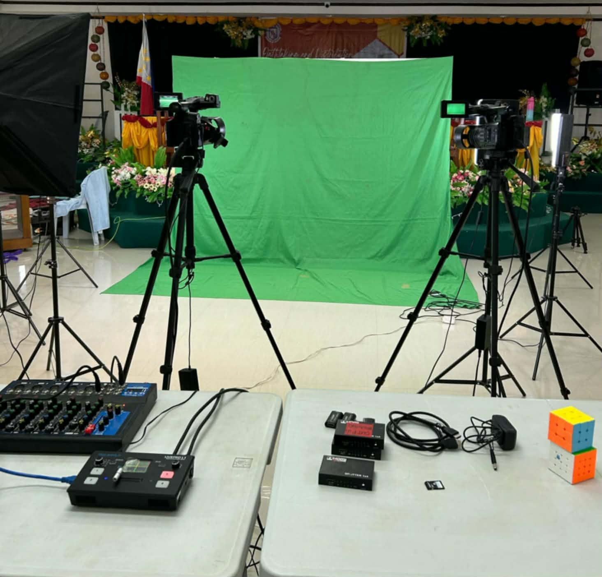

Stories That Inform. Voices That Matter.
"The writers, editors, and creatives behind every story — the people who make MULAT MEDIA possible, issue after issue."
MULAT MEDIA is run entirely by students — writers, editors, photographers, and designers who each bring their own perspective to the newsroom. Below is our full directory. Every member has a dedicated profile page with their role, beat, and published work.

Every member of MULAT MEDIA joined for a different reason — some for the writing, some for the design, some just to see their name on a byline. What ties the newsroom together is the same standard everyone is trained on: get it right, and make it worth reading.
Interested in joining? We're always looking for new writers, photographers, and designers to grow the newsroom.
Get In Touch →